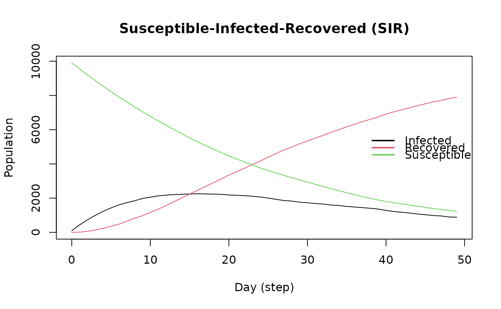
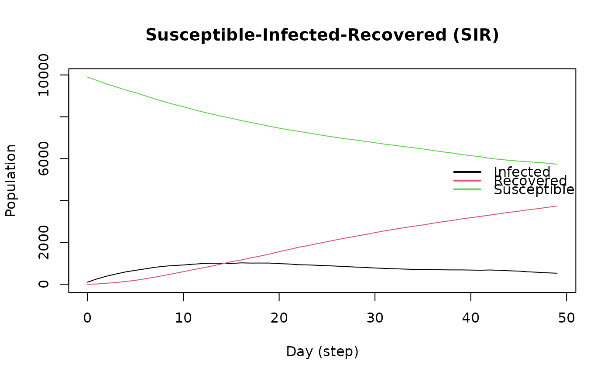

Viruses can be considered to be anything that can be transmitted (e.g., diseases, as well as ideas.) Most models in epiworldR can feature multiple viruses.
Usage
virus(
name,
prevalence,
as_proportion,
prob_infecting,
recovery_rate = 0.5,
prob_death = 0,
post_immunity = -1,
incubation = 7
)
set_name_virus(virus, name)
get_name_virus(virus)
add_virus(model, virus, proportion)
virus_set_state(virus, init, end, removed)
rm_virus(model, virus_pos)
virus_fun_logit(vars, coefs, model)
set_prob_infecting(virus, prob)
set_prob_infecting_ptr(virus, model, param)
set_prob_infecting_fun(virus, model, vfun)
set_prob_recovery(virus, prob)
set_prob_recovery_ptr(virus, model, param)
set_prob_recovery_fun(virus, model, vfun)
set_prob_death(virus, prob)
set_prob_death_ptr(virus, model, param)
set_prob_death_fun(virus, model, vfun)
set_incubation(virus, incubation)
set_incubation_ptr(virus, model, param)
set_incubation_fun(virus, model, vfun)
set_distribution_virus(virus, distfun)
distribute_virus_randomly(prevalence, as_proportion)
distribute_virus_set(agents_ids)Arguments
- name
of the virus
- prevalence
Numeric scalar. Prevalence of the virus.
- as_proportion
Logical scalar. If
TRUE, the prevalence is set as a proportion of the total number of agents in the model.- prob_infecting
Numeric scalar. Probability of infection (transmission).
- recovery_rate
Numeric scalar. Probability of recovery.
- prob_death
Numeric scalar. Probability of death.
- post_immunity
Numeric scalar. Post immunity (prob of re-infection).
- incubation
Numeric scalar. Incubation period (in days) of the virus.
- virus
An object of class
epiworld_virus- model
An object of class
epiworld_model.- proportion
Deprecated.
- init, end, removed
states after acquiring a virus, removing a virus, and removing the agent as a result of the virus, respectively.
- virus_pos
Positive integer. Index of the virus's position in the model.
- vars
Integer vector. Indices (starting from 0) of the positions of the variables used to compute the logit probability.
- coefs
Numeric vector. Of the same length of
vars, is a vector of coefficients associated to the logit probability.- prob
Numeric scalar. A probability (between zero and one).
- param
Character scalar. Name of the parameter featured in
modelthat will be added to the virus (see details).- vfun
An object of class
epiworld_virus_fun.- distfun
An object of class
epiworld_distribution_virus.- agents_ids
Integer vector. Indices of the agents that will receive the virus.
Value
The
set_name_virusfunction does not return a value, but merely assigns a name to the virus of choice.
The
get_name_virusfunction returns the name of the virus of class epiworld_virus.
The
add_virusfunction does not return a value, instead it adds the virus of choice to the model object of class epiworld_model.
The
virus_set_statefunction does not return a value but assigns epidemiological properties to the specified virus of class epiworld_virus.
The
rm_virusfunction does not return a value, but instead removes a specified virus from the model of class epiworld_model.
The
set_prob_infectingfunction does not return a value, but instead assigns a probability to infection for the specified virus of class epiworld_virus.
The
set_prob_recoveryfunction does not return a value, but instead assigns a probability to recovery for the specified virus of class epiworld_virus.
The
set_prob_deathfunction does not return a value, but instead assigns a probability to death for the specified virus of class epiworld_virus.
The
set_incubationfunction does not return a value, but instead assigns an incubation period to the specified virus of class epiworld_virus.
The
distribute_virus_randomlyfunction returns a function that can be used to distribute the virus in the model.
Details
The virus() function can be used to initialize a virus. Virus features can
then be modified using the functions set_prob_*.
The function virus_fun_logit() creates a "virus function" that can be
evaluated for transmission, recovery, and death. As the name sugests, it
computes those probabilities using a logit function (see examples).
The name of the epiworld_virus object can be manipulated with the functions
set_name_virus() and get_name_virus().
In the case of set_prob_infecting_ptr, set_prob_recovery_ptr, and
set_prob_death_ptr, the corresponding parameters is passed as a pointer to
the virus. The implication of using pointers is that the values will be
read directly from the model object, so changes will be reflected.
The distribute_virus_randomly function is a factory function
used to randomly distribute the virus in the model. The prevalence can be set
as a proportion or as a number of agents. The resulting function can then be
passed to set_distribution_virus.
Examples
mseirconn <- ModelSEIRCONN(
name = "COVID-19",
prevalence = 0.01,
n = 10000,
contact_rate = 4,
incubation_days = 7,
transmission_rate = 0.5,
recovery_rate = 0.99
)
delta <- virus(
"Delta Variant", 0, .5, .2, .01, prevalence = 0.3, as_proportion = TRUE
)
# Adding virus and setting/getting virus name
add_virus(mseirconn, delta)
set_name_virus(delta, "COVID-19 Strain")
get_name_virus(delta)
#> [1] "COVID-19 Strain"
run(mseirconn, ndays = 100, seed = 992)
#> _________________________________________________________________________
#> Running the model...
#> ||||||||||||||||||||||||||||||||||||||||||||||||||||||||||||||||||||||||| done.
#> done.
mseirconn
#> ________________________________________________________________________________
#> Susceptible-Exposed-Infected-Removed (SEIR) (connected)
#> It features 10000 agents, 2 virus(es), and 0 tool(s).
#> The model has 4 states.
#> The final distribution is: 3609 Susceptible, 113 Exposed, 11 Infected, and 6267 Recovered.
rm_virus(mseirconn, 0) # Removing the first virus from the model object
set_distribution_virus(delta, distribute_virus_randomly(100, as_proportion = FALSE))
add_virus(mseirconn, delta)
# Setting parameters for the delta virus manually
set_prob_infecting(delta, 0.5)
set_prob_recovery(delta, 0.9)
set_prob_death(delta, 0.01)
run(mseirconn, ndays = 100, seed = 992) # Run the model to observe changes
#> _________________________________________________________________________
#> Running the model...
#> ||||||||||||||||||||||||||||||||||||||||||||||||||||||||||||||||||||||||| done.
#> done.
# If the states were (for example):
# 1: Infected
# 2: Recovered
# 3: Dead
delta2 <- virus(
"Delta Variant 2", 0, .5, .2, .01, prevalence = 0, as_proportion = TRUE
)
virus_set_state(delta2, 1, 2, 3)
# Using the logit function --------------
sir <- ModelSIR(
name = "COVID-19", prevalence = 0.01,
transmission_rate = 0.9, recovery = 0.1
)
# Adding a small world population
agents_smallworld(
sir,
n = 10000,
k = 5,
d = FALSE,
p = .01
)
run(sir, ndays = 50, seed = 11)
#> _________________________________________________________________________
#> |Running the model...
#> |||||||||||||||||||||||||||||||||||||||||||||||||||||||||||||||||||||||| done.
#> | done.
plot(sir)

# And adding features
dat <- cbind(
female = sample.int(2, 10000, replace = TRUE) - 1,
x = rnorm(10000)
)
set_agents_data(sir, dat)
# Creating the logit function
vfun <- virus_fun_logit(
vars = c(0L, 1L),
coefs = c(-1, 1),
model = sir
)
# The infection prob is lower
hist(plogis(dat %*% rbind(-1, 1)))
vfun # printing
#> An epiworld_virus_function object.
#> (model: Susceptible-Infected-Recovered (SIR))
#> This function was built using -virus_fun_logit()-. and it features the following coefficients:
#> 0: -1.00
#> 1: 1.00
set_prob_infecting_fun(
virus = get_virus(sir, 0),
model = sir,
vfun = vfun
)
run(sir, ndays = 50, seed = 11)
#> _________________________________________________________________________
#> |Running the model...
#> |||||||||||||||||||||||||||||||||||||||||||||||||||||||||||||||||||||||| done.
#> | done.
plot(sir)
